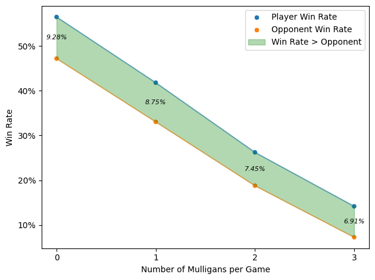

--------------------------------------------------------------------------- FileNotFoundError Traceback (most recent call last) Cell In[5], line 3 1 df_games = pl.scan_parquet(game_file) ----> 3 sum_df = df_summary.collect().to_pandas() 4 mean_mulligan_rate = (sum_df["n_mul"] / sum_df["n_games"]).values[0] 6 df_mul = df_games.unpivot( 7 index=["num_mulligans"], 8 on=["num_mulligans", "opp_num_mulligans"], 9 variable_name="Player", 10 value_name="mulligan_count", 11 ) File ~/miniconda3/envs/dl+bayes-env/lib/python3.12/site-packages/polars/lazyframe/frame.py:2027, in LazyFrame.collect(self, type_coercion, predicate_pushdown, projection_pushdown, simplify_expression, slice_pushdown, comm_subplan_elim, comm_subexpr_elim, cluster_with_columns, no_optimization, streaming, engine, background, _eager, **_kwargs) 2025 # Only for testing purposes 2026 callback = _kwargs.get("post_opt_callback", callback) -> 2027 return wrap_df(ldf.collect(callback)) FileNotFoundError: No such file or directory (os error 2): data/processed/17lands/game_data/premier_draft/All_Sets_Game_PD_Summary.parquet
Bloomburrow (BLB) Arena Draft Analysis
EDA
Draft
BLB
Arena
Draft set analysis for Bloomburrow
Mulligans are a crucial strategy in MTG. If a player’s starting hand is not ideal, they can draw a new one, each time with one fewer card. This process can be repeated as needed, creating a challenging trade-off between a poor hand and a smaller one.
In Figure 1, we observe the distribution of mulligans by the number of re-draws. Most players do not take a mulligan; about 12% take one mulligan, and 2% take two. Very few players take three or more mulligans, with only two instances of a player taking five mulligans, resulting in a starting hand of just two cards.
We also see that 17Lands players are slightly less likely to take mulligans compared to their opponents, likely due to a combination of superior deck construction and more informed mulligan decisions.
A side note on probability distributions: the player mulligan distributions appear to resemble Poisson distributions, with the number of mulligans taken being a discrete event.
Using the mean number of mulligans per game, 0.136, I performed random sampling from a Poisson distribution with \(\lambda=0.136\). The results, shown in Figure 2, closely match the actual data, though the real data shows a slightly higher number of games with one mulligan and slightly fewer for other values.
We can further investigate this pattern when we explore the card data to identify random draw events that correlate with mulligan decisions, such as the number of lands in the starting hand.
--------------------------------------------------------------------------- NameError Traceback (most recent call last) Cell In[9], line 4 1 n_games = df_games.collect().shape[0] 3 df_games = df_games.with_columns( ----> 4 pl.Series(np.random.poisson(lam=mean_mulligan_rate, size=n_games)).alias( 5 "sampled_mul" 6 ) 7 ) 9 df_mul_sample = df_games.unpivot( 10 index=["draft_id"], 11 on=["num_mulligans", "sampled_mul"], 12 variable_name="Distribution", 13 value_name="mulligan_count", 14 ) 17 df_mul_sample = df_mul_sample.collect().to_pandas() NameError: name 'np' is not defined
--------------------------------------------------------------------------- NameError Traceback (most recent call last) Cell In[10], line 10 1 # | label: fig-mulligan-poisson 2 # | fig-cap: "Distribution of Player Mulligans vs Poisson Distribution." 4 custom_palette = { 5 "num_mulligans": "#1f77b4", 6 "sampled_mul": "#2ca02c", 7 } 9 g = sns.displot( ---> 10 data=df_mul_sample, 11 y="mulligan_count", 12 hue="Distribution", 13 multiple="dodge", 14 stat="proportion", 15 common_norm=False, 16 discrete=True, 17 shrink=0.8, 18 element="bars", 19 palette=custom_palette, 20 ) 22 plt.gca().set(xlim=(0, 1)) 23 anno.set_labels_to_percent() NameError: name 'df_mul_sample' is not defined
We now examine the outcomes of games where mulligans occur. In Figure 3, we see a clear near-linear relationship between the number of mulligans and win rates, with win rates decreasing by approximately 15% for each mulligan taken.
When comparing 17Lands players to their opponents, the rate of win decay is consistent, maintaining an 8-9% gap in favor of 17Lands players at each mulligan level.
This data does not reveal the causal relationship between mulligans and win rates. It’s unclear whether mulligans are inherently detrimental or simply indicative of bad starting hands that would have had an even lower probability of winning. This question could be further explored using card data to assess the quality of starting hands that led to mulligans.
